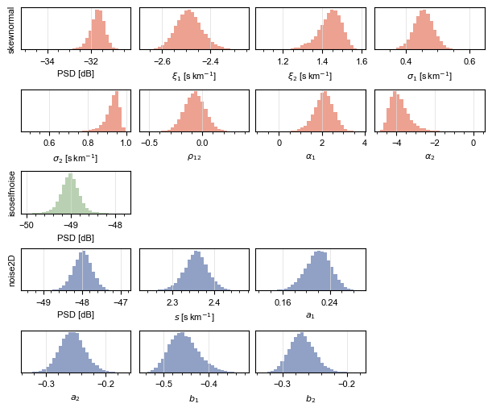

2.2 Model interrogation#
In this example, we invert the data produced in Example 2.1 and then use the posterior pdf to test for a hypothesis concerning the relationship between two parameters.
[31]:
#__ Import: Numerical __
import numpy as np
#__ Import: Topophone2 __
from topophone2.topophone import decompose
from topophone2.utils.read import read_txt
from topophone2.utils.math import density_params
#__ Import: Plotting __
import matplotlib.pyplot as plt
import matplotlib.ticker as ticker
[ ]:
#__ Set up: Plotting __
theme = ['#DC4424', '#74A466', '#24448C', '#F8BC5C']
small, large = 8, 10
plt.rcParams["font.sans-serif"] = ['Arial']
#__ Set up: Random seed __
np.random.seed(2026)
#__ Disable: Warnings __
import warnings
warnings.filterwarnings("ignore", category=UserWarning)
2.2.1 Load example data#
First, we load in the data from Example 2.1.
[ ]:
#__ Read: Signal + noise __
out = read_txt("../data/eg2/signal_topophone2.txt")
freq_Hz = out[0] # Frequency vector [Hz] (frequency)
x = out[1] # Receiver position [m] (receiver, direction)
Gamma_obs = out[2] # Sample-covariance matrix [Pa2.Hz-1] (frequency, receiver, receiver)
N_obs = out[3] # Independent observations
freq = 2 * np.pi * freq_Hz # Angular frequency vector [rad.s-1] (frequency)
#__ Read: Noise only __
out = read_txt("../data/eg2/noise_topophone2.txt")
Gamma_obs_noise = out[2] # Sample-covariance matrix [Pa2.Hz-1] (frequency, receiver, receiver)
N_obs_noise = out[3] # Independent observations
2.2.2 Invert example data#
We parameterise the wavefield using three components:
a skew-normally distributed component (
'skewnormal'),a sensor self-noise component (
'isoselfnoise'),and a cylindrical-harmonic ambient-noise component (
{'sig':'noise2D', 'max_order':2}).
The model vector contains the parameters…
Signal component |
Parameter set |
|---|---|
|
\(\left(E, \xi_1, \xi_2, \sigma_1, \sigma_2, \rho_{12}, \alpha_1, \alpha_2\right)\) |
|
\(\left(E\right)\) |
|
\(\left(E, s, a_1, a_2, b_1, b_2\right)\) |
[ ]:
#__ Signals present __
sigs = [
'skewnormal', # Skew-normal density function
'isoselfnoise', # Self-noise
{'sig':'noise2D', 'max_order':2} # Cylindrical-harmonic noise field
]
#__ Prior bounds __
lower = np.array([ # Lower bound of prior pdf
-40., -2.7e-3, 1.0e-3, 1e-6, 1e-6, -0.9, -5., -5., # Skew-normal parameters [energy, xi_x, xi_y, sigma_x, sigma_y, rho_xy, alpha_x, alpha_y]
-55., # Self-noise parameters [energy]
-55., 2.2e-3, 0.1, -0.35, -0.55, -0.35 # Noise field parameters [energy, slowness, a_1, a_2, b_1, b_2]
])
upper = np.array([ # Upper bound of prior pdf
-30., -2.2e-3, 1.6e-3, 1e-3, 1e-3, 0.9, 5., 5.,
-45.,
-45., 2.5e-3, 0.3, -0.15, -0.30, -0.15
])
#__ Number of flows __
N_flow = 8
#__ Inversion parameters __
learning_rate = 5e-4 # Learning rate for the optimiser
N_iterations = 30000 # Number of iterations for optimiser
N_montecarlo = 50 # Number of samples to estimate ELBO
#__ Number of samples to draw __
N_samples = 20000
The inversion is carried out using the topophone.decompose helper function.
[ ]:
#__ Perform inversion __
decompose(
Gamma_obs = Gamma_obs,
N_obs = N_obs,
Gamma_obs_noise = Gamma_obs_noise,
N_obs_noise = N_obs_noise,
x = x,
freq = freq,
sigs = sigs,
prior_bounds = (lower,upper),
N_flow = N_flow,
learning_rate = learning_rate,
outpath = "../models/eg2",
N_iterations = N_iterations,
N_montecarlo = N_montecarlo,
N_out = 6,
N_samples = N_samples
)
#__ Read results __
m = np.loadtxt(f"../models/eg2/model-samples_iteration-{N_iterations:05d}.txt")
#__ Unpack results __
w_s = m[:,0] # Skew-normal total energy (sample,)
xi = m[:,1:3] # Skew-normal location vector (sample, direction)
sigma = m[:,3:5] # Skew-normal scale vector (sample, direction)
corr = m[:,5] # Skew-normal correlation matrix off-diagonal (sample, direction pair)
alpha = m[:,6:8] # Skew-normal shape vector (sample, direction)
w_n1 = m[:,8] # Self-noise total energy (sample,)
w_n2 = m[:,9] # Angular-harmonic total energy (sample,)
s0 = m[:,10] # Angular-harmonic apparent slowness (sample,)
a = m[:,11:13] # Angular-harmonic cosine coefficient (sample, order)
b = m[:,13:15] # Angular-harmonic sine coefficient (sample, order)
[ ]:
#__ Create figure and axes __
fig = plt.figure(figsize=(6,5), facecolor='white', layout='constrained')
gs = fig.add_gridspec(nrows=5, ncols=4)
axs = [
*[fig.add_subplot(gs[0,i]) for i in range(4)],
*[fig.add_subplot(gs[1,i]) for i in range(4)],
fig.add_subplot(gs[2,0]),
*[fig.add_subplot(gs[3,i]) for i in range(3)],
*[fig.add_subplot(gs[4,i]) for i in range(3)]
]
#__ Labels __
for ax, xlab, ylab in zip(axs,
[
r"PSD [dB]", r"$\xi_1$ [s$\,$km$^{-1}$]", r"$\xi_2$ [s$\,$km$^{-1}$]", r"$\sigma_1$ [s$\,$km$^{-1}$]",
r"$\sigma_2$ [s$\,$km$^{-1}$]", r"$\rho_{12}$", r"$\alpha_1$", r"$\alpha_2$",
r"PSD [dB]",
r"PSD [dB]", r"$s$ [s$\,$km$^{-1}$]", r"$a_1$",
r"$a_2$", r"$b_1$", r"$b_2$"
],
[
r"skewnormal", None, None, None,
None, None, None, None,
r"isoselfnoise",
r"noise2D", None, None,
None, None, None
]
):
if xlab is not None: ax.set_xlabel(xlab, fontsize=small)
if ylab is not None: ax.set_ylabel(ylab, fontsize=small)
#__ Ticks __
for ax, xticks in zip(axs,
[
(2,0.5), (0.2,0.05), (0.2,0.05), (0.2,0.05),
(0.2,0.05), (0.5,0.1), (2,0.5), (2,0.5),
(1,0.2),
(1,0.2), (0.1,0.02), (0.08,0.02),
(0.1,0.02), (0.1,0.02), (0.1,0.02)
]
):
ax.xaxis.set_major_locator(ticker.MultipleLocator(xticks[0]))
ax.xaxis.set_minor_locator(ticker.MultipleLocator(xticks[1]))
ax.set_yticks([])
ax.tick_params(labelsize=small)
ax.grid(color='gainsboro', linewidth=0.5)
#__ Plot 'skewnormal' parameter histograms __
scales = [1e0, 1e3, 1e3, 1e3, 1e3, 1e0, 1e0, 1e0]
for mi, ax, sc in zip(m.T[:8], axs[:8], scales):
ax.hist(sc*mi, bins=30, color=theme[0], alpha=0.5, zorder=1)
#__ Plot 'isoselfnoise' parameter histograms __
scales = [1e0]
for mi, ax, sc in zip([m.T[8]], [axs[8]], scales):
ax.hist(sc*mi, bins=30, color=theme[1], alpha=0.5, zorder=1)
#__ Plot 'noise2D' parameter histograms __
scales = [1e0, 1e3, 1e0, 1e0, 1e0, 1e0]
for mi, ax, sc in zip(m.T[9:], axs[9:], scales):
ax.hist(sc*mi, bins=30, color=theme[2], alpha=0.5, zorder=1)
#__ Show figure __
display(fig)
plt.close(fig)

2.2.3 Interrogate model ensemble#
The location azimuth of the skew-normally distributed signal is deviated from the source-receiver azimuth due to cross-winds. We test the hypothesis that the azimuthal skew is pointing back towards the source-receiver azimuth, as perhaps expected due to scattering within cross winds.
The function utils.math.density_params specifies the location vector in cylindrical coordinates (xi_circ). It then creates a local orthonormal basis at the location and projects the scale vector and skew vector (wd_circ) onto the basis. If the difference between the azimuth of the location vector and the source-receiver azimuth (290 deg) is positive then the location is deviated clockwise; if the projection of the skew vector in the local azimuthal direction is positive then the skew
is clockwise relative to the location; anticlockwise vice-versa. The hypothesis is supported when one is clockwise and one is anticlockwise.
[27]:
#__ Rotate results __
_, _, xi_circ, _, _, wd_circ = density_params(xi, sigma, corr[:,None], alpha)
# xi_circ : Location vector in cylindrical coordinates (sample, direction)
# wd_circ : Skew vector in cylindircal coordinates about location (sample, direction)
# direction: [radius, azimuth]
#__ Azimuthal deviation of location vector from Hukkakero __
hukkakero_azimuth = 290 # Source-receiver azimuth [deg]
xi_deviation = xi_circ[:,1] - hukkakero_azimuth # Deviation from source-receiver azimuth [deg] (sample,)
#__ Clockwise or anticlockwise? __
xi_clockwise = xi_deviation > 0 # Location vector deviated clockwise wrt. Hukkakero? (sample,)
wd_clockwise = wd_circ[:,1] > 0 # Skew vector pointing clockwise wrt. location? (sample,)
#__ Calculate number of samples skewed back towards source __
points_back = np.logical_or(
np.logical_and(xi_clockwise, ~wd_clockwise), # Clockwise deviation, anti-clockwise skew
np.logical_and(~xi_clockwise, wd_clockwise) # Anticlockwise deviation, clockwise skew
)
support = 100 * np.mean(points_back) # Proportion of samples supporting hypothesis
#__ Print result __
print(f"Proportion of samples supporting hypothesis: {support:.2f} %")
Proportion of samples supporting hypothesis: 99.98 %